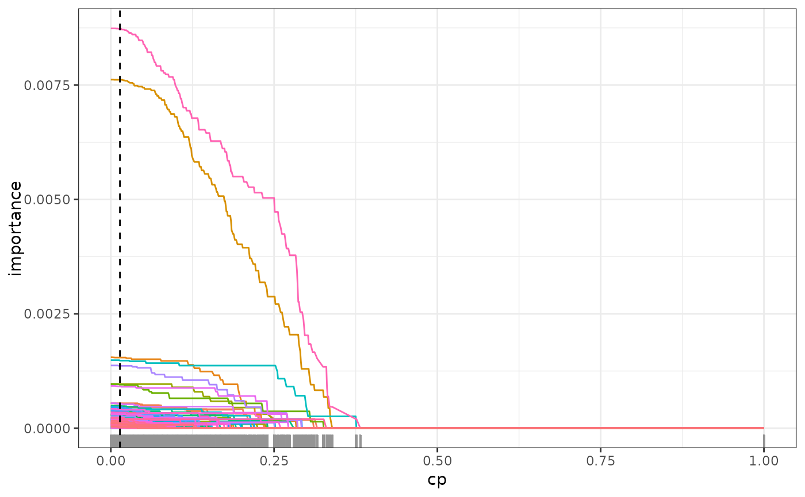
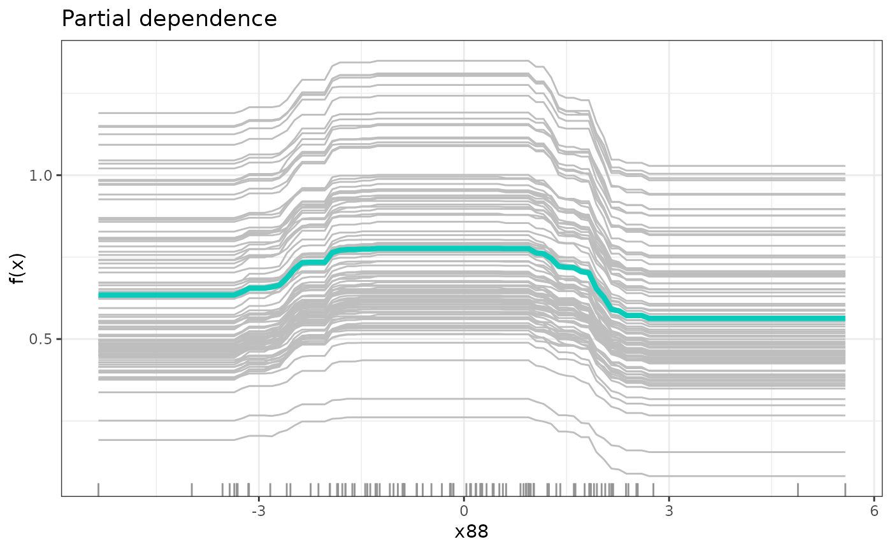

SDForest.RdEstimate regression Random Forest using spectral deconfounding. The spectrally deconfounded Random Forest (SDForest) combines SDTrees in the same way, as in the original Random Forest (Breiman 2001) . The idea is to combine multiple regression trees into an ensemble in order to decrease variance and get a smooth function. Ensembles work best if the different models are independent of each other. To decorrelate the regression trees as much as possible from each other, we have two mechanisms. The first one is bagging (Breiman 1996) , where we train each regression tree on an independent bootstrap sample of the observations, e.g., we draw a random sample of size \(n\) with replacement from the observations. The second mechanic to decrease the correlation is that only a random subset of the covariates is available for each split. Before each split, we sample \(\text{mtry} \leq p\) from all the covariates and choose the one that reduces the loss the most only from those. $$\widehat{f(X)} = \frac{1}{N_{tree}} \sum_{t = 1}^{N_{tree}} SDTree_t(X)$$
SDForest(
formula = NULL,
data = NULL,
x = NULL,
y = NULL,
nTree = 100,
cp = 0,
min_sample = 5,
mtry = NULL,
mc.cores = 1,
Q_type = "trim",
trim_quantile = 0.5,
q_hat = 0,
Q = NULL,
A = NULL,
gamma = 7,
max_size = NULL,
gpu = FALSE,
return_data = TRUE,
mem_size = 1e+07,
leave_out_ind = NULL,
envs = NULL,
nTree_leave_out = NULL,
nTree_env = NULL,
max_candidates = 100
)Object of class formula or describing the model to fit
of the form y ~ x1 + x2 + ... where y is a numeric response and
x1, x2, ... are vectors of covariates. Interactions are not supported.
Training data of class data.frame containing the variables in the model.
Matrix of covariates, alternative to formula and data.
Vector of responses, alternative to formula and data.
Number of trees to grow.
Complexity parameter, minimum loss decrease to split a node.
A split is only performed if the loss decrease is larger than cp * initial_loss,
where initial_loss is the loss of the initial estimate using only a stump.
Minimum number of observations per leaf.
A split is only performed if both resulting leaves have at least
min_sample observations.
Number of randomly selected covariates to consider for a split,
if NULL half of the covariates are available for each split.
\(\text{mtry} = \lfloor \frac{p}{2} \rfloor\)
Number of cores to use for parallel processing,
if mc.cores > 1 the trees are estimated in parallel.
Type of deconfounding, one of 'trim', 'pca', 'no_deconfounding'.
'trim' corresponds to the Trim transform (Ćevid et al. 2020)
as implemented in the Doubly debiased lasso (Guo et al. 2022)
,
'pca' to the PCA transformation(Paul et al. 2008)
.
See get_Q.
Quantile for Trim transform,
only needed for trim, see get_Q.
Assumed confounding dimension, only needed for pca,
see get_Q.
Spectral transformation, if NULL
it is internally estimated using get_Q.
Numerical Anchor of class matrix. See get_W.
Strength of distributional robustness, \(\gamma \in [0, \infty]\).
See get_W.
Maximum number of observations used for a bootstrap sample.
If NULL n samples with replacement are drawn.
If TRUE, the calculations are performed on the GPU.
If it is properly set up.
If TRUE, the training data is returned in the output.
This is needed for prune.SDForest, regPath.SDForest,
and for mergeForest.
Amount of split candidates that can be evaluated at once. This is a trade-off between memory and speed can be decreased if either the memory is not sufficient or the gpu is to small.
Indices of observations that should not be used for training.
Vector of environments of class factor
which can be used for stratified tree fitting.
Number of trees that should be estimated while leaving one of the environments out. Results in number of environments times number of trees.
Number of trees that should be estimated for each environment. Results in number of environments times number of trees.
Maximum number of split points that are proposed at each node for each covariate.
Object of class SDForest containing:
Vector of predictions for each observation.
List of SDTree objects.
Names of the covariates.
Out-of-bag loss. MSE
Out-of-bag loss using the spectral transformation.
Variable importance. The variable importance is calculated as the sum of the decrease in the loss function resulting from all splits that use a covariate for each tree. The mean of the variable importance of all trees results in the variable importance for the forest.
List of indices of trees that did not contain the observation in the training set.
Out-of-bag predictions.
If return_data is TRUE the following are also returned:
Matrix of covariates.
Vector of responses.
Spectral transformation matrix.
If envs is provided the following are also returned:
Vector of environments.
Number of trees for each environment.
List of indices of trees that did not contain the observation or the same environment in the training set for each observation.
Out-of-bag loss using only trees that did not contain the observation or the same environment.
Out-of-bag loss using the spectral transformation and only trees that did not contain the observation or the same environment.
Out-of-bag predictions using only trees that did not contain the observation or the same environment.
If environments are left out, the environment for each tree, that was left out.
If environments are provided, the environment each tree is trained with.
Breiman L (1996).
“Bagging predictors.”
Machine Learning, 24(2), 123–140.
ISSN 0885-6125, doi:10.1007/BF00058655
.
Breiman L (2001).
“Random Forests.”
Machine Learning, 45(1), 5–32.
ISSN 08856125, doi:10.1023/A:1010933404324
.
Ćevid D, Bühlmann P, Meinshausen N (2020).
“Spectral Deconfounding via Perturbed Sparse Linear Models.”
J. Mach. Learn. Res., 21(1).
ISSN 1532-4435.
Guo Z, Ćevid D, Bühlmann P (2022).
“Doubly debiased lasso: High-dimensional inference under hidden confounding.”
The Annals of Statistics, 50(3).
ISSN 0090-5364, doi:10.1214/21-AOS2152
.
Paul D, Bair E, Hastie T, Tibshirani R (2008).
““Preconditioning” for feature selection and regression in high-dimensional problems.”
The Annals of Statistics, 36(4).
ISSN 0090-5364, doi:10.1214/009053607000000578
.
set.seed(42)
# simulation of confounded data
sim_data <- simulate_data_nonlinear(q = 2, p = 150, n = 100, m = 2)
X <- sim_data$X
Y <- sim_data$Y
train_data <- data.frame(X, Y)
# causal parents of y
sim_data$j
#> [1] 88 112
# comparison to classical random forest
fit_ranger <- ranger::ranger(Y ~ ., train_data, importance = 'impurity')
fit <- SDForest(x = X, y = Y, nTree = 10, Q_type = 'pca', q_hat = 2)
fit <- SDForest(Y ~ ., train_data)
fit
#> SDForest result
#>
#> Number of trees: 100
#> Number of covariates: 150
#> OOB loss: 0.66
#> OOB spectral loss: 0.07
# comparison of variable importance
imp_ranger <- fit_ranger$variable.importance
imp_sdf <- fit$var_importance
imp_col <- rep('black', length(imp_ranger))
imp_col[sim_data$j] <- 'red'
plot(imp_ranger, imp_sdf, col = imp_col, pch = 20,
xlab = 'ranger', ylab = 'SDForest',
main = 'Variable Importance')
# check regularization path of variable importance
path <- regPath(fit)
# out of bag error for different regularization
plotOOB(path)
plot(path)

# detection of causal parent using stability selection
stablePath <- stabilitySelection(fit)
plot(stablePath)
# pruning of forest according to optimal out-of-bag performance
fit <- prune(fit, cp = path$cp_min)
# partial functional dependence of y on the most important covariate
most_imp <- which.max(fit$var_importance)
dep <- partDependence(fit, most_imp)
plot(dep, n_examples = 100)
